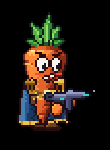
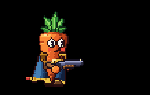

Reloading
How the guns reload, what each reload looks and sounds like, the reload bar under the crosshair, and what your co-op partners see.
Every gun reloads with its own little animation and its own sound: the Revolver ticks rounds into its cylinder, the SMG swaps a magazine, the Shotgun takes shells one at a time and racks its pump, and the Rocket Launcher has a fresh rocket pushed into its tube. While a reload runs you can't shoot, and a bar under your crosshair fills as the gun loads.
Starting and stopping a reload
- Press R to reload, or just keep firing: an empty gun reloads by itself.
- A full gun, or one that's already reloading, ignores R.
- The gun is loaded only when the reload finishes. Until then it can't fire.
- Switching guns drops the reload in progress. Each gun keeps the rounds it had, so you can swap away and come back to finish later.
- Being knocked down drops the reload too.
- A dropped reload goes quiet at once: the clicks it hadn't reached yet never play.
How long a reload takes is set per gun: 0.5 s for the revolver, 1.1 s for the SMG, 1.4 s for the shotgun and 2 s for the rocket launcher.
Reloading from a reserve
The Shotgun and the Rocket Launcher use limited ammo (special and heavy, see Ammo), so a reload can only load what's left in reserve:
- A reload loads enough to fill the gun, or whatever the reserve still holds if that's less. The shotgun thumbs in only the shells it has, and partners see and hear exactly that many.
- With nothing in reserve there is no reload: pulling the trigger or pressing R on the empty gun gives a dry click instead.
- Rounds leave the reserve only when the reload finishes, so a reload cut short by a swap or a knock-down costs nothing.
The Revolver and SMG use normal ammo and always reload in full.
Each gun's reload
The animation and the sound follow one shared list of beats (each round, the magazine slap, the pump), so every click you hear lands on a move you see.
Revolver
The carrot drops the revolver into a lowered, muzzle-up pose and the spent brass tumbles out of the cylinder onto the floor. The free hand cups the open cylinder, and each round going in ticks the gun up with a tiny high click. The cylinder snaps shut with a ratchet, the biggest tick, and the gun pops back up to aim with a little overshoot. Only the rounds you fired go in, so a top-up after two shots is two ticks spread over the same reload time.
SMG

The empty magazine drops out and falls to the floor as a real object: it bounces, clatters and lies there for a while. The gun is drawn with an empty well while the off hand fetches a fresh magazine and slaps it in with a thump (the gun jolts up), then racks the bolt back and lets it slam home.
Shotgun

The shotgun cants up and the off hand reaches down for a red shell, brings it up and pushes it into the loading port, once for each shell fired. Each shell is a plastic thup, a little higher in pitch than the last. Then the hand grabs the pump and racks it: the wooden pump slides back and slams home.
The shotgun also pumps after every shot. 0.28 s after the blast the pump slides back, the spent red hull flips out, and 0.1 s later it snaps home, with the same sound as the reload's pump. If that shot emptied the gun, the reload starts straight away and its own pump at the end takes the place of this one.
Rocket launcher

The launcher holds one rocket, loaded from the front like an RPG: a loaded launcher shows its red warhead poking out of the muzzle, and once it fires the tube is drawn empty. The reload tips the tube up a little; the off hand reaches down to the hip for a new rocket, brings it round in front of the muzzle and shoves it in tail first until the warhead seats, which knocks the tube back toward the carrot. Then the hand slaps the tube to lock it. It's the slowest reload in the game, so pick your moment.
Sounds
Every click, slap and rack is synthesised once at startup and played on its beat, so reloading never costs a frame. The guns are easy to tell apart without looking:
| Gun | Sound |
|---|---|
| Revolver | Bright and tinny: a latch click, a tiny tick per round climbing in pitch, a snap and a ratchet |
| SMG | Mid-range clacks: a release click and a hollow clack as the empty mag drops, a thump as the mag slaps home, a spring scrape and a sharp bolt clack |
| Shotgun | Low and chunky: a plastic thup per shell, a long "chk" back and a deep "CHUNK" home |
| Rocket Launcher | Heavy and hollow: a long metal scrape as the rocket slides down the tube, a deep hollow thunk as it seats, and a heavy latch clack |
The reload bar
While you reload, a small bar sits just under your crosshair:
- The revolver, shotgun and rocket launcher show one pip per round (the launcher's single pip lights as the rocket seats). The rounds still in the gun start lit, and each one that goes in lights up with a brief glow.
- The SMG (and any gun holding more than 8 rounds) shows one bar that fills smoothly over the whole reload.
- When the reserve can't fill the gun, the slots that won't be filled stay a darker shade the whole time, so you can see the reload will come up short.
- When the gun is ready, the crosshair and the bar flash bright and fade over 0.22 s.
The bar is only drawn for your own carrot. The ammo pips in the weapon HUD at the bottom left also refill as the reload runs.
Co-op
Everyone sees and hears everyone's reloads. Your reload is sent to the other players as a single message saying how many rounds went in, and each machine plays the same animation, sound and falling brass, mag or hulls from it. Whether a partner's rocket launcher is loaded (warhead showing) travels with their position updates. Other players' reloads play a little quieter than your own. If a partner swaps guns or goes down mid-reload, the rest of it goes quiet on your machine too. The reload bar under the crosshair is yours alone; partners just see your carrot reloading.
Tuning
Each gun's reload is tuned in the Reload group of its weapon file (see Revolver, SMG and
Shotgun): the reload pose, when each beat lands (as fractions of the reload time), how hard each
beat jolts the gun, where the off hand goes, and how far the pump or bolt travels (the
Rocket Launcher has the same group). The shotgun's
after-shot pump is pump_after_shot and pump_slam. The reload bar's size, colours and glow are on
scenes/reload_hud.tscn, listed below.
Design notes
Three reload concepts were built side by side and compared as in-game captures:
- A: Mechanical. Believable gun handling: brass dumped and rounds thumbed in, a magazine dropped, fetched and slapped home, shells pushed in one at a time and a pump. Shipped for the SMG and the shotgun.
- B: Cartoon flourish. Showy and bouncy: a gunslinger twirl, the SMG tossed up and caught, shells flipped into the shotgun and a one-handed spin-cock, with squash and stretch and a ready sparkle. Not shipped.
- C: Minimal and snappy. A lowered "can't shoot" pose with a bump on every beat and a pop back to aim, plus a reload bar under the crosshair. Shipped for the revolver's reload and the crosshair bar.
The owner then added the shotgun's pump after every shot. The Rocket Launcher came later and
added a fourth reload style (a front-loaded rocket) to the same beat system. All three concepts are kept in full on the
reload-feel/idea-a, reload-feel/idea-b and reload-feel/idea-c branches, so pieces (B's twirl,
say) can be brought back later.
Tunable parameters
These are read straight from the game's files, so they are always the current values. Open the file in the Godot Inspector to change them.
Reload bar (scenes/reload_hud.tscn)
Edit scripts/reload_hud.gd (script defaults; a scene or resource may override them)
| Parameter | Value | Range | What it does |
|---|---|---|---|
offset | (0, 8) | Where the pips sit, from the crosshair's centre. | |
pip_size | 2 px | 1 to 4 | |
pip_gap | 1 px | 0 to 3 | |
max_pips | 8 | 1 to 16 | Guns with more rounds than this (and magazines) get a bar instead of pips. |
bar_width | 15 px | 4 to 40 | |
bar_height | 2 px | 1 to 4 | |
empty_color | #3a3248 | ||
short_color | #221c2c | Slots this reload can't fill because the reserve ran short (special and heavy ammo): darker still. | |
full_color | #fffaf0 | ||
outline_color | #15111f | ||
fresh_glow | 1.6 | 1 to 6 | A round that just went in (and the bar's leading edge) glows this bright (linear; above 1 blooms) for fresh_time. |
fresh_time | 0.12 s | 0.02 to 0.5 | |
ready_color | #fff2b0 | The "ready" flash: the crosshair and the full row glow this bright, fading over ready_time. | |
ready_glow | 3 | 1 to 8 | |
ready_time | 0.22 s | 0.05 to 0.8 |